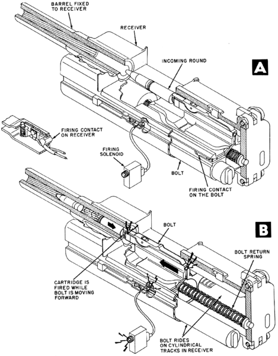
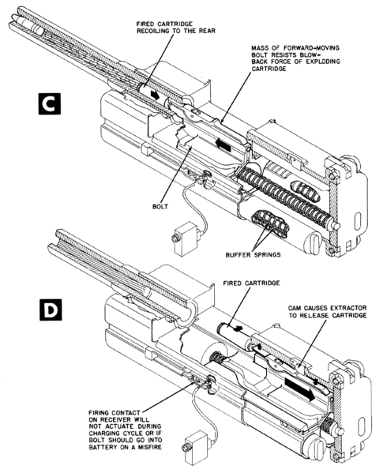

LE MK 108
D'abord conçu à son propre compte par RheinMetall en 1940, il fut adopté par la Luftwaffe en 1943 pour équiper ses chasseurs.
En effet, en fonction d'études statistiques faites par la Luftwaffe, il fallait 5 coups au but avec un MG151/20
pour abattre un chasseur, et jusqu'à 25 pour un bombardier. Afin de rationaliser les coups, il fut imaginé d'utiliser un canon plus gros afin de réduire ce nombre.
Le MK108 répondait à ces critères.
Cependant, il n'était pas exempt
de défaut, notamment un canon court qui réduisait la portée balistique et la précision, ainsi qu'une munition plus légère qui forçait à une diminution de la distance de tir.
Ces choix ont été fait pour conserver à la fois une vitesse
initiale importante et la capacité d'embarquer le canon sur un avion.
De part sa conception de mise à feu, il était impossible de synchroniser le canon pour tirer au travers du cercle de l'hélice.
En effet, le système de tir est
dit à a mise à feu anticipée, dont voici un schéma de fonctionnement :


Le verrouillage de la culasse était réalisé à l'air comprimé bar des bouteilles situées dans la carlingue de l'avion.
Caractéristiques :
Calibre : 30 mm
Cadence de tir : 600 c/min
vitesse initiale : 540 m/s
Du fait de sa cadence de tir, il fut surnommé le marteau piqueur.
Sur cette
page, vous trouverez une liste des munitions utilisées.
Et
ici, en détail, en anglais, le fonctionnement du mécanisme de tir.
Plus d'information sur le canon sur la page wikipédia qui lui est dédiée.